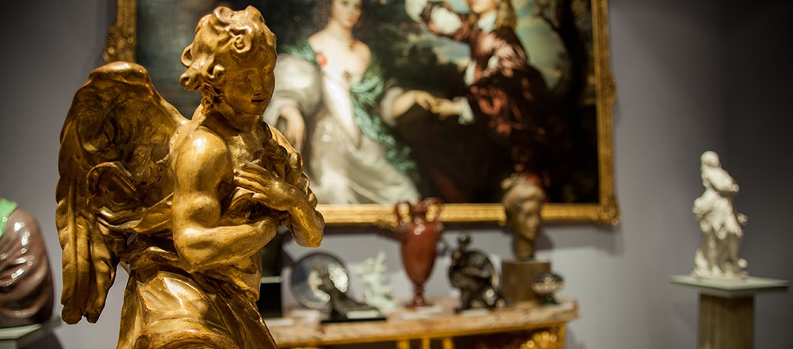
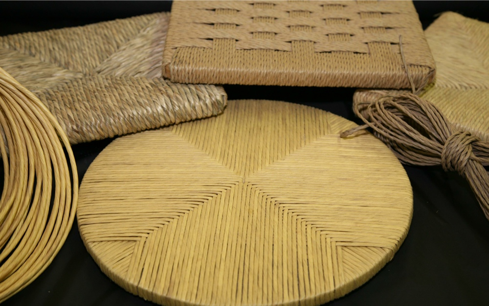
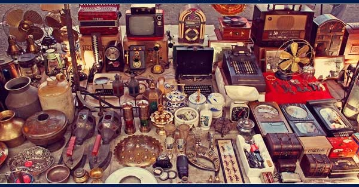

Antico Castiglione
Antiquariato e Restauro di Mobili Antichi a Bologna
Restauro Mobili Antichi

Uno dei lavori più affascinanti nell’ambito della lavorazione del legno è il restauro di un mobile antico e malandato. Il restauro di mobili antichi richiede tecnica, qualche piccolo trucco e molta pazienza se si vuole ottenere risultati eccellenti. La prima cosa da fare quando si inizia un lavoro di restauro di un vecchio mobile e togliere tutte le cerniere, le serrature e gli eventuali fregi in metallo, che andranno puliti a parte con gli appositi prodotti che si trovano normalmente in commercio. Successivamente si procede a restaurare il mobile seguendo diverse fasi. La prima fase consiste nel togliere la vernice vecchia con l'apposito tipo di sverniciatore. Successivamente, a seconda del tipo di legno di cui il mobile e' fatto, si procede a dare l'olio paglierino su tutto il mobile. Una volta il mobile ha assorbito l'olio, la fase che segue consiste nella lucidatura del mobile con la gommalacca. Diversi mobili richiedono trattamenti diversi a seconda del tipo del legno, l'eta' del mobile e le preferenze dei nostri clienti.
Trattamento AntiTarlo

Se il vostro mobile presenta sulla sua superficie una serie di piccolo buchi che vanno a creare una trama sempre piu fitta che lo indebolisce e lo rende friabile, questo indica che il mobile e’ stato attaccato dai tarli. Il tarlo è un insetto che si nutre della polpa del legno. In questo caso il mobile avrebbe bisogno di uno specifico trattamento antitarlo. Per eseguire questa operazione, esistono delle varie tecniche che si applicano a seconda della situazione del mobile. Antico Castiglione offre ai clienti il trattamento con diversi tipi di liquido antitarlo, trattamento a gas e trattamento con il micronde. Il tarlo e’ uno dei peggiori nemici per I vostri mobili e sopratutto perche’ i tarli hanno dei parassiti (degli acari) che pungono anche gli uomini, e quindi non aspettare che diventi troppo tardi prima di fare il trattamento..
Restauro Dipinti Antichi
I dipinti sono fra gli oggetti d’arte piu’ sensibili. Il restauro di un dipinto inizia col capire il tipo di patina che si vuole lavorare. Successivamente si passa alla prima fase che sarebbe la pulizia del dipinto. Una volta pulito il dipinto, avremo una superficie priva delle patine formulate nel tempo. La fase successiva e’ quella del livellemento della superficie, rendendola il piu possibile uguale all’originale. dopo di che si passa alla fase delle campitura a tempera delle parti mancanti. Questo serve per poter creare una base cromatica il cui colore risulta ugualle a quello della base originale. Quando la tempera si e’ asciugata , stabilizzandosi nel colore, con speciali colori e vernici si vanno a creare quelle velature che servono a ricomporre le parti mancanti. Alla fine, si va a rivelare quelle parti superficiali che l’azione del tempo ha rimosso.
Valutazioni Oggetti Antichi
Antico Castiglione offre ai clienti il servizio di valutazione certificata dei loro oggetti di antiquariato.
La valutazione di un oggetto d’antiquariato consente di determinare l’epoca, lo stile, lo stato e le caratteristiche
principali dell’oggetto, le quali incidono sulla stima del suo valore. I nostril servizi di valutazione includono la
valutazione dei diversi tipi di oggetti antichi, la valutazione dei mobile antichi e la valutazione dei dipinti e sculture
antiche.
Saremmo molto lieti di VALUTARE ed eventualmente ACQUISTARE pezzi appartenenti alle seguenti categorie
Antichità in generale
Argenteria
Arte moderna e Design
Bronzi
Candelabri Antichi
Dipinti antichi
Dipinti del 400 / 500
Dipinti del 500
Dipinti dell’ 800 e del 900
Dipinti del 600 e del 700
Dipinti di Arte Moderna e Contemporanea
Lampadari
Mobili Antichi
Mobili Francesi
Oggetti importanti antichi
Oggetti importanti di qualsiasi epoca
Orologi antichi
Porcellane
Quadri moderni
Vasi antichi
Sculture in bronzo, marmot, legno
Restauro Mobili Antichi
Antico Castiglione offre il servizio di restauro e manutenzione di porte, tapparelle, portoni in legno di tutti gli stili e le epoche.
Impagliatura e Tappezzeria
L’esperienza maturate durante gli anni consente a noi di realizzare ogni genere di impagliatura e tappezzeria delle vostre sedie, poltrone e divani. I nostri servizi includono il semplice cordoncino, paglia di Vienna, impagliatura chiavari, impagliatura con paglia palustre, impagliatura in carta fine e altro. Antico Castiglione garantisce ai sui client risultati eccellenti con qualunque tipo di sedie o poltrone.
Restauro e Manutenzione Lampadari
Antico Castiglione offre servizi completi di restauro e rifacimento pezzi mancanti per i lampadari. Abbiamo degli esperti di restauro di lampadari vetro Murano, lampadari di cristallo . La stretta cooperazione con I nostri esperti ci permette di gestire tutte le operazioni di conservazione e restauro di lampadari antichi: messa a norma, pulitura, restauro, ripristino, rifacimenti, riparazioni e manutenzioni ordinarie e straordinarie, necessarie per ogni lampadario d'epoca.
Acquisto Oggetti Antichi
Acquistiamo: antiquariato, dipinti, quadri, mobili e oggetti.
COME FUNZIONA:
1- Invia le fotografie dei mobili o oggetti antichi che desideri vendere a anticocastiglione@gmail.com o via Whatsapp al numero 347 5143679
2- Indica dove è visibile la merce che proponi
3-
Rispondiamo a tutti entro pochi minuti e nel caso di nostro interesse fisseremo subito un appuntamento per la visione di persona.
Ritiriamo :
- mobili antichi
-oggetti antichi
-oggettistica antica
-mobili di design
-quadri, dipinti ecc
Siamo interessati all’acquisto di mobili antichi, ad esempio:
armadi antichi
specchiere antiche
comò antichi
credenze antiche
oggetti antichi
lampadari antichi
tavoli antichi
librerie antiche
vetrine antiche
Effettuiamo anche :
-Sgombero cantine ed appartamenti a Bologna e Provincia.